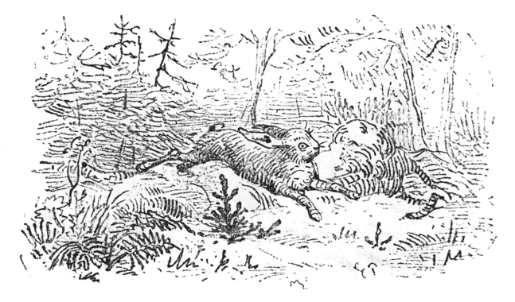
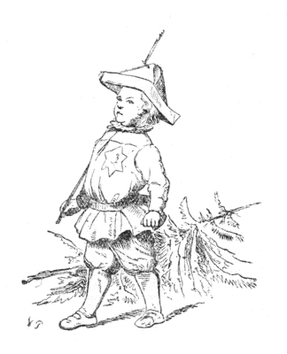

まちそとの
「やあ、ずいぶんかわいいもみの木だなあ。」
と、いいいいしました。けれど、そんなことをいわれるのが、このもみの木は、いやで、いやで、なりませんでした。
つぎの年、もみの木は
小さいもみの木は、ためいきをついて、こういいました。
「わたしも、ほかの木のように大きかったら、さぞいいだろうなあ。そうすれば、
こんなふうでしたから、もみの木は、お日さまの光を見ても、とぶ鳥を見ても、それから、あさゆう、
やがて冬になりました。ほうぼう雪が白くつもって、きらきらかがやきました。するとどこからか一ぴきの野うさぎが、まい日のように来て、もみの木のあたまをとびこえとびこえしてあそびました。――ああ、じつにいやだったらありません。――でも、それからのち、ふた冬とおりこすと、もみの木はかなり、せいが高くなりましたから、うさぎはもうただ、そのまわりを、ぴょんぴょん、はねまわっているだけでした。
「ああうれしい。だんだんそだっていって、今に大きな年をとった木になるんだ。世のなかにこんなにすばらしいことはない。」
もみの木は、こんなことを
秋になると、いつも木こりがやって来て、いちばん大きい木を二、三本きりだします。これは、まい年のおきまりでした。そのときは、見あげるほど高い木が、どしんという大きな音をたてて、
みんな、どこへいくんだろう。いったいどうなるんだろう。
春になって、つばめと、こうのとりがとんで来たとき、もみの木はさっそくそのわけをたずねました。
「ねえ、ほんとにどこへつれて行かれたんでしょうね。あなたがた。とちゅうでおあいになりませんでしたか。」
つばめはなんにもしりませんでした。けれどもこうのとりは、しきりとかんがえていました。そしてながいくびを、がってん、がってんさせながら、こういいました。
「そうさね、わたしはしっているとおもうよ。それはね、エジプトからとんでくるとちゅう、あたらしい
「まあ、わたしも、遠い海をこえていけるくらいな、大きい木だったら、さぞいいだろうなあ。けれどこうのとりさん、いったい海ってどんなもの。それはどんなふうに見えるでしょう。」
「そうさな、ちょっとひとくちには、とてもいえないよ。」
こうのとりはこういったまま、どこかへとんでいってしまいました。そのとき、空の上でお日さまの光が、しんせつにこういってくれました。
「わかいあいだが、なによりもいいのだよ。ずんずんのびて、そだっていくわかいときほど、たのしいことはないのだよ。」
すると、風も、もみの木にやさしくせっぷんしてくれました。つゆもはらはらと、しおらしいなみだを、かけてくれました。けれどももみの木には、それかどういうわけかわかりませんでした。
クリスマスがちかくなってくると、わかい木がなんぼんもきりたおされました。なかには、このもみの木よりもわかい小さいのがありましたし、またおない年ぐらいのもありました。ですからもみの木は、じぶんも早くよその
「どこへいくんだろう。あの木たちは、みんな、わたしより小さいし、なかにはずっと小さいのもある。それからまた、なんだって、枝をきりおとされないんだろう。いったい、どこへつれていかれるんだろう。」
もみの木は、こういってきくと、そばですずめたちが、さえずっていいました。
「しっているよ、しっているよ、町へいったとき、ぼくたちは、まどからのぞいたから、しっているよ。みんなは、そりゃあすばらしいほど、りっぱになるんだよ。まどからのぞくとね、あたたかいおへやのまんなかに、小さなもみの木は、みんな立っていたよ。
「で、それから――。」と、もみの木は、のこらずの枝をふるわせながらたずねました。「ねえ［＃「「ねえ」は底本では「ね「え」］、それから、どうしたの。」
「うん、それからどうしたか、ぼくたちはしらないよ。とにかく、あんなきれいなものは、ほかでは見たことがないね。」
「ああ、どうかして、そんなはなばなしい
そのときまた、風とお日さまの光とが、やさしく声をかけました。
「わたしたちのなかにいるほうがきらくだよ。このひろびろしたなかで、げんきのいい、わかいときを、十分にたのしむのがいいのだよ。」
けれども、もみの木は、そんなことをきいても、ちっともうれしくありませんでした。
こうして冬が去って、夏もすぎました。もみの木はずんずんそだっていって、いつもいつもいきいきした、みどりの葉をかぶっていました。ですからたれも、このもみの木をみた人で、
「なんてまあきれいな木だろうね。」
と、いわないものはありませんでした。
それで、クリスマスの
やっと、しょうきづいて見ると、もみの木は、ほかの木といっしょにわらにくるまれて、どこかのうちのにわのなかにおかれていました。そばではひとりの男がこういっていました。
「この木はすてきだなあ。これいっぽんあればたくさんだ。」
そこへはっぴをきた、ふたりの男がやってきました。そしてもみの木を、りっぱにかざった、大きなへやにはこんでいきました。へやのかべにはいろいろながくが、かかっていました。タイルばりの大きなだんろのそばには、ししのふたのついた、
「さあ、こんばんよ。」と、その人たちは、みんないっていました。「これでこんばん、あかりがつきます。」
それをきいて、もみの木はかんがえました。
「いいなあ、こんばんからだってねえ。はやくばんになって、あかりがつけばいいなあ。それからどんなことがあるだろう。森からいろいろな木があいにくるかしら。それとも、すずめたちがまどガラスのところへ、とんでくるかしら。もしかしたら、このままここで根がはえて、冬も夏もこうやってかざられたまま、立っているのかもしれない。」
そんなふうに、あれやこれやとかんがえるのも、もっともなことでした。けれども、もみの木はあんまりかんがえつめたので、からだのかわが、いたくなりました。ちょうど、にんげんが、ずつうでくるしむように、木にとっては、このかわのいたいのは、かなりこまるびょうきなのでした。
さて、ろうそくのあかりがつきました。なんというかがやかしさなのでしょう。なんというりっぱさなのでしょう。もみの木は、うれしまぎれに、枝という枝をぶるぶるさせました。そのため、いっぽんのろうそくの火がゆれて、あおい葉にもえうつりました。おかげで、かなりこげました。
「あぶないわ。」と、お
やがて、両びらきのとびらがさあっとあいて、こどもたちが、まるで、クリスマスの木ごとたたきおとしそうないきおいで、とびこんできました。おとなたちも、そのあとからしずかについてきました。こどもたちは、ほんのちょっとのあいだ、だまって立っていましたが、――たちまち、わあっというさわぎになって、木のまわりをおどりまわりながら、クリスマスのおくりものを、ひとつ、ひとつ、さらっていきました。
「この子たちはなにをするんだろう。なにがはじまるんだろう。」と、もみの木はかんがえました。するうち、枝のところまで、ろうそくは、だんだんともえていきました。そしてひとつずつ消されてしまいました。やがて、木の枝につけてあるものを取ってもいいというおゆるしが出ました。やれやれたいへん、こどもたちは、いきなり木をめがけて、とびつきました。木はみしみしと
こどもたちは、もぎ
「おはなししてね、おはなししてね。」
こどもたちはそうさけんで、ずんぐりしたひとりの小さい人を、木のところへひっぱっていきました。その人は、木の下に
「よしよし、こうしていれば、みなさんはみどりの森のなかにいるようなものだ。だから、この木もうれしがって、おはなしをきくだろう。だがおはなしはひとつだけだよ。＊イウェデ・アウェデのおはなしをしようかね。それとも、だんだんからころげおちたくせに、うまく
＊イウエデ、アウエデ、キウエデ、カウエデ―というようにつづくことばあそび。
「イウェデ・アウェデ。」と、五六人のこどもたちはさけびました。するとほかのこどもたちは、「でっくりもっくりさん。」とさけびました。みんながそうやって、くちぐちに、わいわいいいたてるので、がやがや、がやがや、おおさわぎになりました、けれども、もみの木ばかりは、だまってこうおもっていました。「わたしには、そうだんしてくれないのかしら。わたしは、このおなかまではないのかしら。」
なるほどおなかまにはちがいないのです。けれどももみの木のおやくめは、もうすんでいました。
やがていまの人は、だんだんをころげおちたくせに、出世して、王女さまをおよめさんにした、でっくりもっくりさんのおはなしをしました。おはなしがすむと、こどもたちは、ぱちぱち手をたたいて、
「もひとつして、もひとつして。」と、さけびたてました。こどもたちはイウェデ・アウェデのおはなしもしてもらいたかったのでしたが、でっくりもっくりさんのおはなしだけで、がまんしなければなりませんでした。もみの木はびっくりしたような、それでいて、かんがえこんでいるようなようすをしていました。だって、森の鳥たちは、そんなはなしは、ちっともしてくれませんでしたからね。
「でっくりもっくりさんは、だんだんから、ころげおちたくせに、王女さまを、およめさんにしたとさ。そうだ、そうだ。それが
「そうだ、そうだ、わたしだって、だんだんからころげおちて、王女さまをおよめさんにもらうかもしれない。」
これで、あしたもまた、あかりをつけてもらって、おもちゃだの、金のくだものだので、かざられるのだと思って、もみの木はぞくぞくしていました。
「あしたはもうふるえないぞ。こんなにりっぱになったのだから、うんとうれしそうな、とくいらしいかおをしていよう。きっとまた、でっくりもっくりさんのおはなしをしてもらえるだろうし、ことによったら、イウェデ・アウェデのおはなしもしてもらえるかもしれない。」
こうしてもみの木は、じっとひと
つぎの
「ああ、きっともういちど、りっぱにかざりなおしてくれるんだな。」と、もみの木は思いました。けれども、召使たちは、木をへやのそとへ、ひきずっていきました。そして、はしごだんをあがっていって、
「どうしたっていうんだろう。こんなところで、なにができるんだろう。こんなところで、はなしをしても、なにがきこえるだろう。」と、もみの木はかんがえました。そしてかべにもたれたまま、いつまでも、あきずに、かんがえつづけていました。――もうずいぶん時間がありました。なにしろ、いく
「今は、そとは冬なのだ。地めんはかちかちにこおって、雪がかぶさっている。だから、あの人たちは、わたしをうえることができない。それで、わたしは春がくるまで、ここでかこわれているのだ。ほんとに、なんてかんがえぶかい人たちだろう。――ただ、ここがこんなに、うす
「チュウ、チュウ。」
そのとき、ふと、小ねずみがなきながら、ちょろちょろとはいだしてきました。そのあとから、もう一ぴきの、小ねずみが出てきました。ねずみたちは、もみの木のにおいをかいで見て、枝のあいだを、はいまわりました。
「ひどいさむさですねえ。」と、小ねずみたちはいいました。「でもここはずいぶんいいところでしょう。そうはおもいませんか、もみの木のおじいさん。」
「わたしは、そんなおじいさんじゃないぞ。」と、もみの木は少しおこっていいました。「まだまだ、ぼくより、としをとっている木は、たくさんあるよ。」
「あなたはどこからきたの。いろんなことを知っているの。」と、小ねずみたちは、たいへんなにかをききたがっていました。「ねえ、もみの木さん。世のなかで、いちばんすばらしいところのことを、おはなししてください。あなたは、そこからきたんでしょう。そら、たなの上にチーズがのっていたり、てんじょうから、ハムがぶらさがっていたり、あぶらろうそくの上で、おどりをおどったりして、はいるとき、ひょろひょろ［＃「ひょろひょろ」は底本では「ひょろょひろ」］、出るとき、むっくりでっくり――、と、いうようなところにいたんでしょう。」
「どうも、そんな所は知らないね。」と、もみの木はいいました。「けれど、森のことならしっているよ。そこではお日さまの光はよくあたるし、鳥がうたをうたっているよ。」
それからもみの木は、じぶんのわかかったときのことを、すっかりはなしました。小ねずみは、これまでに、そんなことをちっともききませんでしたので、めずらしがってきいていました。それからあとでこういいました。
「まあずいぶんいろいろなものを、たくさん見たんですねえ。ずいぶんしあわせだったんですねえ。」
「わたしがかい。」
そういわれて、もみの木は、はじめて、いま、じぶんのはなしたことをかんがえてみました。
「なるほど、そういえばしあわせだったよ。そう、つまりあのじぶんが、わたしもいちばんしあわせだったなあ。」
それから、もみの木は、おいしいおかしや、ろうそくのあかりでかざられた、クリスマスの前の晩のはなしをしました。
「まあ、ずいぶんしあわせだったのね、もみの木のおじいさん。」と、小ねずみがいいました。
「わたしは、そんなにおじいさんではないというのに。」と、もみの木はいいました。「この冬、はじめて森のなかから出てきたばかりだもの。わたしは、今がさかりの年なんだ。ただすこしのっぽにそだちすぎたかもしれない。」
「おじさんのはなしはおもしろいね。」
と、小ねずみがいいました。
つぎの晩にも、小ねずみは、ほかに四ひきのなかまをつれて、話をききにやってきました。もみの木は、話していればいるほど、あれもこれもはっきりおもいだせました。そして、こうかんがえました。
「あのじぶんは、ほんとにしあわせだったけれど、ああいうじだいがまたやってくるだろう。きっとまたやってくるだろう。でっくりもっくりさんは、だんだんからころげおちたくせに、王女さまをおよめさんにもらった。だからわたしだって、たぶん王女さまをおよめさんにするかもしれない。」
それから、もみの木は、森のなかにはえていた、かわいらしい
「でっくりもっくりさんて、だれなんですか。」
と、小ねずみたちがたずねました。もみの木は、ひとつもまちがえずに、そのおはなしを、すっかりはなしてやりました。小ねずみたちは、それはそれはうれしがって、もみの木のいちばん高い枝にとびつきそうにしていました。つぎの晩には、もっと、たくさんのねずみたちがきました。にちよう日には二ひきのおやねずみさえ出てきました。けれど、このおやねずみは、そんなはなしは、いっこうおもしろくないといいました。そういわれると、小ねずみたちも、すこし、がっかりしていました。なるほど、それはせんほどおもしろくおもわれませんでしたものね。
「君のしっているお話は、それひとつきりなのかい。」と、おやねずみはいいました。
「ああ、これひとつさ。」と、もみの木はこたえました。「なにしろわたしはうまれていちばんしあわせだった晩に、そのおはなしをきいたのだからね。けれど、そのときは、それがそんなにしあわせだとはしらなかった。」
「ずいぶん、つまらないおはなしだなあ。君は
「しらないねえ。」と、もみの木はこたえました。
「そう。じゃあどうもありがとう。」と、おやねずみたちはいって、なかまのところへかえっていきました。とうとう、小ねずみたちもいってしまいました。すると、もみの木は、またひとりぼっちになったので、ためいきをつきながらいいました。
「げんきのいい、小ねずみたちが、わたしをとりまいて、おもしろそうに、はなしをきいてくれたのは、ほんとにゆかいだったなあ。だが、それもおわりさ。でも今にここからはこびだされれば、せいぜいものをたのしくかんがえることだ。」
ところで、いつそんなことになったでしょうか。
なるほど、あくる朝、
「さあ、また
「びいちくち、ぴいちくち、うちのひとがかえってきましたよ。」
けれどもそれは、もみの木のことではありませんでした。
「さあ、いよいよこれから、わたしは生きるのだぞ。」
と、うれしそうな声をだして、もみの木はおもいきり、
ところで、そのとき、にわには、あのクリスマスの晩、この木のまわりをとびまわった、けんきのいいこどもたちが、あそんでいました。するとひとり、いちばんちいさい子がかけてきて、いきなり金の星を、もぎとってしまいました。
「ごらんよ。きたない、ふるいもみの木にくっついていたんだよ。」
その子はそうさけびながら、枝をふんづけましたから、枝はくつの下で、ぽきぽき音を立てました。
もみの木は、目のさめるようにうつくしい、花ぞののなかの花をみました。そしてみすぼらしいじぶんのすがたを見まわしてみて、これならいっそ、ものおきのくらいかたすみにほうり出されていたほうが、よかったとおもいました。それからつづいて森のなかにいたときの、わかいじぶんのすがたを、目にうかべました。楽しかったクリスマスの前の晩のことを、おもいだしました。でっくりもっくりさんのおはなしを、うれしそうにきいていた、小ねずみたちのことをおもいだしました。
「もうだめだ、もうだめだ。」と、かわいそうなもみの木はためいきをつきました。「たのしめるときに、たのしんでおけばよかった。もうだめだ。もうだめだ。」
やがて、
「パチ、パチ、パチ。」と、まねをしました。
もみの木は、あいかわらず、ふかいためいきのかわりに、パチ、パチいいながら、森のなかの、夏のまひるのことや、星がかがやいている、冬の
こどもたちは、やはり、にわであそんでいました。そのいちばん小さい子は、金の星をむねの上につけていました。その星は、もみの木が一生のうちで、いちばんたのしかった晩、あたまにつけていたものでした。けれど、いまはそれも、おしまいになりました。もみの木も、そのおはなしも、おしまいになりました。おしまい。おしまい。さて、どんなおはなしも、そうしておしまいになっていくのです。
